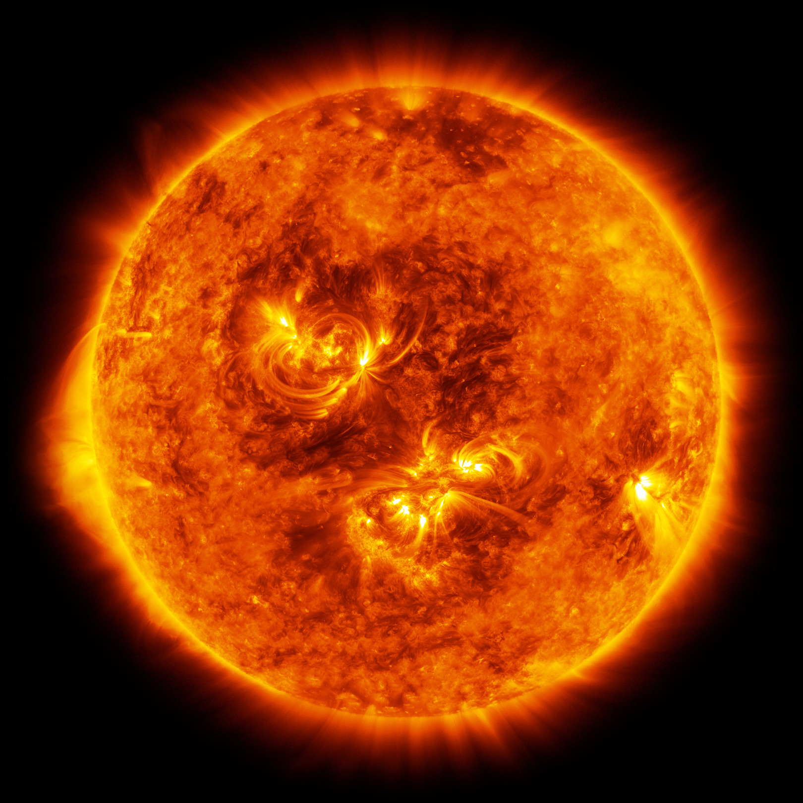

Sun
The Sun is the star at the centre of the Solar System. It is a massive, nearly perfect sphere of hot plasma, heated to incandescence by nuclear fusion reactions in its core, radiating the energy from its surface mainly as visible light and infrared radiation with 10% at ultraviolet energies. It is the main source of energy for life on Earth.
The Sun is the star at the centre of the Solar System. It is a ...